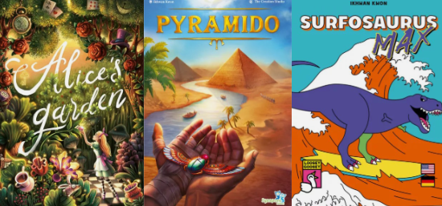
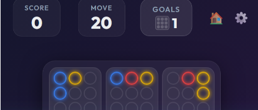
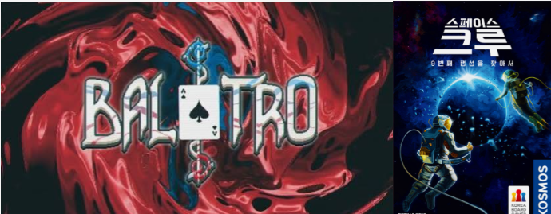

Welcome to the second official development note for Hearts Extreme! This log covers my background as a game developer, board game designer, and the early development milestones leading up to June 2026.
1. Career Anxieties & The Pursuit of Side Projects
I have been creating games as a side passion for a very long time. Globally, the gaming industry does not have as long of a history compared to traditional industries, and South Korea is no exception. Throughout my career, choosing to work at video game studios instead of joining large corporate conglomerates left me plagued by constant anxiety—the quiet fear of not knowing how many years I could stay employed always followed me.
To South Koreans of my generation, game companies were often perceived as offering lower salaries than major conglomerates, but carrying the alluring dream of a massive hit. However, through years of corporate work, I realized this was largely an illusion. Such mega-hits ultimately benefited only a handful of founders, while regular employees remained just corporate workers. Recognizing this reality, I constantly strived to create my own games outside of work hours with like-minded colleagues. In my early 30s, a side project succeeded enough that we established an official startup. However, our Facebook-based game company failed to keep pace with the market's rapid shift toward mobile, and closed down within three years.
2. Transitioning to Tabletop Board Game Design
After that closure, I returned to corporate jobs, but refused to abandon my drive to build games. While anxiety lingered, looking back, I think I am simply someone who cannot stop creating. I wanted to gather people to build games together again, but as my close colleagues entered their mid-30s, they naturally lost the energy to pursue side projects after work. Around that time, a new colleague introduced me to modern tabletop board games, and I was instantly captivated. I realized that here was a genre where I could create complete games entirely on my own!
For nearly ten years since then, I designed board games as a side career and successfully published around 10 titles. The greatest charm of designing board games is collaborating with diverse teams to bring various creative visions to life. Knowing that players in distant countries are enjoying games born from my ideas is truly fantastic—collecting every single language edition of my published games remains one of my greatest pleasures.

Published Tabletop Board Games (Alice's Garden, Pyramido, Surfosaurus Max)
3. Discovering Vibe Coding & Early Digital Prototypes
While publishing 10 board games was a proud milestone, I was not entirely satisfied because none became the breakout hit I envisioned. Then, in the spring of this year, I discovered Vibe Coding. Wow! A brand new world opened up where I could build full video games completely by myself. I began by automating routine tasks at my day job, quickly becoming proficient with AI development tools.
As confidence grew, excitement built up: What should I build first? When designing board games, playtest groups often provide feedback. Hearing comments like "This feels more like a single-player PC game" is usually a failing grade for a commercial tabletop game. However, to me at that moment, it felt like an incredible opportunity. I took one of my puzzle board game concepts and attempted to build it as a mobile game in early May. But after two weeks, I scrapped the project because the game proved far too complex for casual mobile puzzle players. I learned that while digital tools make execution easier, they don't erase inherent design complexity.
My second attempt was a word-association puzzle game. However, deep into development, I discovered that a nearly identical game had already been published on the market.

Remains of Cancelled Early Digital Prototypes
4. Finding Inspiration: Balatro, Mighty, and The Crew
Despite these early setbacks, I kept drafting candidate ideas. When I first encountered Vibe Coding, the game that captured my imagination most was Balatro—I loved how a simple card game framework could deliver tremendous depth and replayability. My very first candidate was digitizing a classic board game called Mighty (a traditional Korean 5-player trick-taking game). However, I concluded that Mighty alone couldn't provide enough content volume for a commercial release.
Revisiting my candidate list, I re-evaluated cooperative board game mechanics. Designing physical cooperative board games is notoriously difficult because managing artificial rules manually can be cumbersome. However, in digital video games where solo play is standard, cooperative systems offer a huge advantage. That led me to The Crew. I realized that adapting mission objectives from The Crew into a single-player card game could create a captivating experience.

Core Design Inspirations: Balatro & The Crew
5. Designing Hearts Extreme & Level Objectives
Starting in June, I began full implementation with two core goals:
- A trick-taking game where players complete specific mission challenges (inspired by The Crew).
- A game offering varied deck compositions where clearing missions unlocks more content (inspired by Balatro).
Recognizing that deck-building combo mechanics wouldn't fit this puzzle design, I focused on crafting diverse level objectives within fixed deck structures:
- Reaching target trick-win counts
- Winning tricks with specific designated cards
- Capturing specific target cards
- Avoiding penalty point cards
- Predicting exact trick wins and hitting the target
- Predicting wins while capturing designated cards
- Achieving consecutive win predictions
I named the project Hearts Extreme from day one. In Korea, trick-taking board games are considered complex due to unfamiliarity, whereas in Western markets, Hearts is a beloved classic. The title clearly communicates a fresh, single-player trick-taking experience built on familiar grounds.
6. 100% Open Hands: Transforming Card Games into Puzzles
Playtesting existing mobile Hearts games revealed that team-based AI mechanics caused player frustration when AI teammates made poor moves. Therefore, as a single-player experience, Level 1 focused on hitting target trick wins.
While programming the target-win mode, the signature mechanics of Hearts Extreme was born: 100% Open Hands! By displaying all NPC cards on screen, the game shifted from card luck into a pure deterministic puzzle. This unique identity gave me complete confidence that the game possessed strong commercial appeal.
7. June Refinements & Studio Foundation
Development progressed smoothly through June. To provide long-term replayability, I designed Ranked Leaderboard Mode as the endgame challenge. Toward late June, I streamlined level structures—merging complex multi-stage levels and trimming standalone single-stage levels to maintain tight pacing across 5-life runs.
With the core game shape firmly established, launch felt tangible. I registered our Steamworks developer account, incorporated Hwantastic Games, and secured our official domain name.
Around July, I transitioned to using Claude Code and tools like Fable, which proved invaluable in diagnosing subtle edge cases. I highly recommend Claude Code to anyone taking on Vibe Coding projects.
This wraps up our development journey up to June 2026. In our next update, I will share the story of July and our upcoming playtester recruitment. I hope this retrospective inspires fellow indie developers!